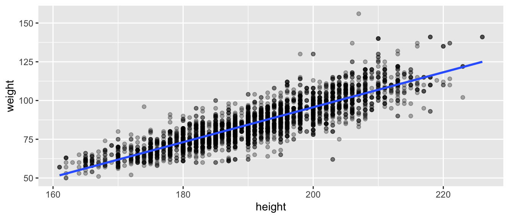
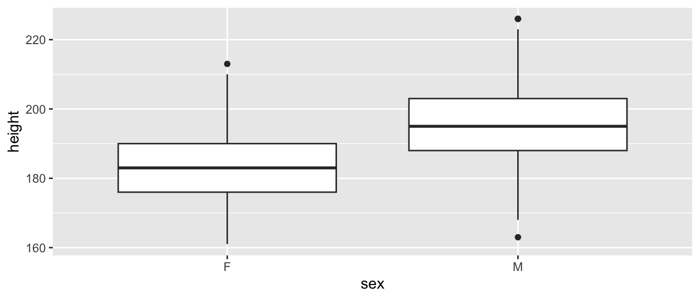
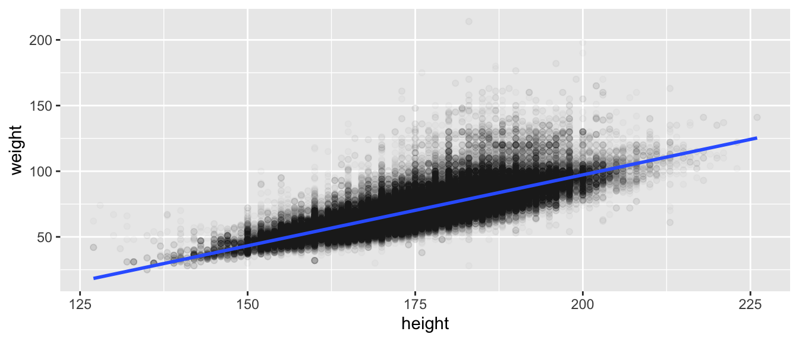

library(dplyr)
library(ggplot2)
library(moderndive)
library(olympicAthletes)
bball <- olympic_athletes |>
filter(sport == "Basketball", !is.na(height), !is.na(weight))Solutions for the end-of-chapter exercises in Chapter 5 — Basic Regression. Dataset: olympic_athletes from olympicAthletes.
TipSection coverage at a glance
Exercises per section — count of prompts that touch each book section.
| Book section | # of exercises |
|---|---|
| Setup / EDA | 5 |
| 5.1 One numerical explanatory variable | 10 |
| 5.2 One categorical explanatory variable | 8 |
| Residual diagnostics (cross-cuts 5.1.3/5.2.3) | 2 |
| 5.3 Related topics | 5 |
| Critical thinking / synthesis | 7 |
Exercises by subsection — which prompts target each finer-grained subsection.
| Subsection | Exercises |
|---|---|
| Setup and exploratory data analysis | EX5.1, EX5.2, EX5.3, EX5.4, EX5.5 |
| 5.1.1 EDA / 5.1.2 Simple linear regression | EX5.6, EX5.7, EX5.8, EX5.9 |
| 5.1.3 Observed/fitted values & residuals | EX5.10, EX5.11, EX5.12, EX5.20, EX5.21, EX5.23 |
| 5.2.1 EDA / 5.2.2 Linear regression (categorical) | EX5.13, EX5.14, EX5.15, EX5.16, EX5.17, EX5.18, EX5.19 |
| 5.2.3 Observed/fitted values & residuals (categorical) | EX5.22 |
| Residual diagnostics & model fit (5.1.3 + 5.2.3) | EX5.24, EX5.25 |
| 5.3.1 Correlation is not necessarily causation | EX5.26, EX5.27, EX5.28 |
| 5.3.2 Best-fitting line (least-squares) | EX5.29 |
5.3.3 get_regression_*() companion functions |
EX5.30 |
| Critical thinking / synthesis | EX5.31, EX5.32, EX5.33, EX5.34, EX5.35, EX5.36, EX5.37 |
A note on coverage. The Setup/EDA bucket reviews dplyr+ggplot fundamentals before any modeling — these spill across 5.1.1 and 5.2.1 EDA subsections.
Difficulty stars: ★ warm-up, ★★ standard application, ★★★ critical thinking.
Setup and EDA
NoteEX5.1 — show question
EX5.1 (★) Filter olympic_athletes to sport == "Basketball", drop rows with missing height or weight, and save the result as bball. How many rows remain?
Solution (reference: Section 5.1.1 “Exploratory data analysis”).
nrow(bball)[1] 3711
NoteEX5.2 — show question
EX5.2 (★) Compute summary statistics (mean, sd, min, max) for height and weight in bball.
Solution (reference: Section 5.1.1 “Exploratory data analysis”).
bball |>
summarize(
mean_h = mean(height), sd_h = sd(height),
min_h = min(height), max_h = max(height),
mean_w = mean(weight), sd_w = sd(weight),
min_w = min(weight), max_w = max(weight)
) mean_h sd_h min_h max_h mean_w sd_w min_w max_w
1 191.1404 11.5101 161 226 85.69739 14.83561 50 156
NoteEX5.3 — show question
EX5.3 (★) Build a scatterplot of weight (y) vs height (x) on bball. Roughly describe the relationship.
Solution (reference: Section 5.1.1 “Exploratory data analysis”, Section 2.3 “Scatterplots”).
Strong positive linear association — taller basketball athletes weigh more, on average.
ggplot(bball, aes(x = height, y = weight)) +
geom_point(alpha = 0.3) +
geom_smooth(method = "lm", se = FALSE)
NoteEX5.4 — show question
EX5.4 (★★) Compute cor(bball$height, bball$weight). Interpret the value in one sentence.
Solution (reference: Section 5.1.1 “Exploratory data analysis”, correlation).
A correlation around 0.7–0.8 indicates a strong positive linear relationship — most of the variation in Weight is captured by Height alone.
cor(bball$height, bball$weight)[1] 0.8744318
NoteEX5.5 — show question
EX5.5 (★★) Why is plotting the bivariate scatter the right first step before fitting a regression line — even when you’re confident the relationship is linear?
Solution (reference: Section 5.1.1 “Exploratory data analysis”, EDA-first principle).
Regression coefficients are summary statistics — they hide outliers, non-linearity, and clustering. A scatterplot lets you see the relationship and decide whether a straight line is even appropriate.
Simple linear regression: one numerical predictor
NoteEX5.6 — show question
EX5.6 (★★) Fit model_b <- lm(weight ~ height, data = bball). Use get_regression_table(model_b) to print the regression table.
Solution (reference: Section 5.1.2 “Simple linear regression”).
model_b <- lm(weight ~ height, data = bball)
get_regression_table(model_b)# A tibble: 2 × 7
term estimate std_error statistic p_value lower_ci upper_ci
<chr> <dbl> <dbl> <dbl> <dbl> <dbl> <dbl>
1 intercept -130. 1.97 -66.0 0 -134. -126.
2 height 1.13 0.01 110. 0 1.11 1.15
NoteEX5.7 — show question
EX5.7 (★★) Interpret the slope coefficient on height. Use units in your sentence.
Solution (reference: Section 5.1.2 “Simple linear regression”, slope interpretation).
For each additional centimeter of height, predicted weight increases by approximately β kilograms (read the slope estimate from your table — typically ~1.0 kg/cm for basketball).
NoteEX5.8 — show question
EX5.8 (★★) Interpret the intercept. Why is the literal interpretation (“expected weight of an athlete 0 cm tall”) misleading?
Solution (reference: Section 5.1.2 “Simple linear regression”, extrapolation).
The intercept is the predicted Weight at Height = 0 cm — far outside the observed range (~150–230 cm). Using it as a literal prediction is extrapolation, which the chapter warns against.
NoteEX5.9 — show question
EX5.9 (★★★) Repeat EX5.6 for sport == "Gymnastics" and call the model model_g. Compare the two slopes — does Weight rise faster or slower with Height in gymnastics vs basketball?
Solution (reference: Section 5.1.2 “Simple linear regression”).
Gymnasts’ slope is typically steeper (kg per cm) — a small height range maps to a larger weight range relative to basketball, where many tall players cluster around average BMI.
gym <- olympic_athletes |>
filter(sport == "Gymnastics", !is.na(height), !is.na(weight))
model_g <- lm(weight ~ height, data = gym)
get_regression_table(model_g)# A tibble: 2 × 7
term estimate std_error statistic p_value lower_ci upper_ci
<chr> <dbl> <dbl> <dbl> <dbl> <dbl> <dbl>
1 intercept -105. 0.759 -138. 0 -106. -103.
2 height 0.99 0.005 213. 0 0.981 0.999Observed/fitted values and residuals
NoteEX5.10 — show question
EX5.10 (★★) Use get_regression_points(model_b) to inspect fitted values and residuals. Print the first 5.
Solution (reference: Section 5.1.3 “Observed/fitted values and residuals”).
get_regression_points(model_b) |> slice_head(n = 5)# A tibble: 5 × 5
ID weight height weight_hat residual
<int> <dbl> <dbl> <dbl> <dbl>
1 1 75 177 69.8 5.24
2 2 68 178 70.9 -2.89
3 3 86 193 87.8 -1.79
4 4 87 188 82.2 4.84
5 5 90 187 81.0 8.97
NoteEX5.11 — show question
EX5.11 (★★) Use get_regression_summaries(model_b) and report R². Interpret it in one sentence (in context).
Solution (reference: Section 5.1.2 “Simple linear regression”, R² interpretation).
With R² ≈ 0.6, roughly 60% of the variation in basketball-athlete Weight is explained by Height alone — a strong but imperfect predictor.
get_regression_summaries(model_b)# A tibble: 1 × 9
r_squared adj_r_squared mse rmse sigma statistic p_value df nobs
<dbl> <dbl> <dbl> <dbl> <dbl> <dbl> <dbl> <dbl> <dbl>
1 0.765 0.765 51.8 7.20 7.20 12049. 0 1 3711
NoteEX5.12 — show question
EX5.12 (★★) Use the model to predict the weight of a basketball athlete who is 200 cm tall. Pull the intercept and slope from get_regression_table(model_b) and compute intercept + slope * 200 by hand. (No need for any special prediction function — a fitted line is just y = a + bx.)
Solution (reference: Section 5.1.2 “Simple linear regression”, prediction).
Pull the intercept and slope from the regression table and plug height = 200 into the equation weight_hat = intercept + slope * height:
rt <- get_regression_table(model_b)
rt# A tibble: 2 × 7
term estimate std_error statistic p_value lower_ci upper_ci
<chr> <dbl> <dbl> <dbl> <dbl> <dbl> <dbl>
1 intercept -130. 1.97 -66.0 0 -134. -126.
2 height 1.13 0.01 110. 0 1.11 1.15a <- rt$estimate[1] # intercept
b <- rt$estimate[2] # slope on height
a + b * 200[1] 95.668Simple linear regression: one categorical predictor
NoteEX5.13 — show question
EX5.13 (★★) On bball, build side-by-side boxplots of height by sex. Which sex has the higher median height?
Solution (reference: Section 5.2.1 “Exploratory data analysis”).
Male basketball players are taller on average than female basketball players.
ggplot(bball, aes(x = sex, y = height)) + geom_boxplot()
NoteEX5.14 — show question
EX5.14 (★★) Fit model_sex <- lm(height ~ sex, data = bball) and print get_regression_table(). Which sex level is the baseline (i.e., absorbed into the intercept)?
Solution (reference: Section 5.2.2 “Linear regression”).
R uses alphabetical order for factor levels by default, so F is the baseline. The coefficient SexM is the difference M − F.
model_sex <- lm(height ~ sex, data = bball)
get_regression_table(model_sex)# A tibble: 2 × 7
term estimate std_error statistic p_value lower_ci upper_ci
<chr> <dbl> <dbl> <dbl> <dbl> <dbl> <dbl>
1 intercept 182. 0.277 658. 0 182. 183.
2 sex-M 13.0 0.34 38.2 0 12.3 13.6
NoteEX5.15 — show question
EX5.15 (★★) Interpret the intercept of model_sex in one sentence — what does it represent?
Solution (reference: Section 5.2.2 “Linear regression”, baseline interpretation).
The intercept is the mean Height of female basketball players in the data.
NoteEX5.16 — show question
EX5.16 (★★) Interpret the SexM coefficient — what does it represent? Connect it to a difference of group means.
Solution (reference: Section 5.2.2 “Linear regression”, offset coefficients).
SexM = mean Height of male players − mean Height of female players. So adding it to the intercept gives the male group mean.
NoteEX5.17 — show question
EX5.17 (★★★) Compute the two group means directly with dplyr (group_by(sex) |> summarize(mean(height))). Confirm that intercept = mean of baseline, and intercept + slope = mean of the other group.
Solution (reference: Section 5.2.2 “Linear regression”, equivalence to group means).
bball |>
group_by(sex) |>
summarize(mean_h = mean(height), .groups = "drop")# A tibble: 2 × 2
sex mean_h
<chr> <dbl>
1 F 182.
2 M 195.coef(model_sex)(Intercept) sexM
182.48828 12.97817 The difference between the two group means equals the SexM coefficient.
NoteEX5.18 — show question
EX5.18 (★★★) On the full olympic_athletes (drop missing height), fit lm(height ~ season). Which Season has taller athletes on average?
Solution (reference: Section 5.2.2 “Linear regression”).
Summer’s mean Height is slightly higher (driven by basketball, volleyball, rowing, etc.).
all_h <- olympic_athletes |> filter(!is.na(height))
get_regression_table(lm(height ~ season, data = all_h))# A tibble: 2 × 7
term estimate std_error statistic p_value lower_ci upper_ci
<chr> <dbl> <dbl> <dbl> <dbl> <dbl> <dbl>
1 intercept 176. 0.025 7106. 0 175. 176.
2 season-Winter -1.01 0.054 -18.8 0 -1.11 -0.903
NoteEX5.19 — show question
EX5.19 (★★★) Filter to the 5 most-populous sports (most athlete-rows). Fit lm(height ~ sport) and read the table — each non-baseline sport gets its own coefficient. Interpret one of them.
Solution (reference: Section 5.2.2 “Linear regression”, multi-level categorical).
top5 <- olympic_athletes |>
count(sport, sort = TRUE) |> slice_head(n = 5) |> pull(sport)
dat <- olympic_athletes |>
filter(sport %in% top5, !is.na(height))
get_regression_table(lm(height ~ sport, data = dat))# A tibble: 5 × 7
term estimate std_error statistic p_value lower_ci upper_ci
<chr> <dbl> <dbl> <dbl> <dbl> <dbl> <dbl>
1 intercept 176. 0.048 3634. 0 176. 176.
2 sport-Cycling -0.267 0.109 -2.46 0.014 -0.481 -0.054
3 sport-Gymnastics -13.1 0.08 -165. 0 -13.3 -13.0
4 sport-Shooting -2.75 0.111 -24.9 0 -2.96 -2.53
5 sport-Swimming 2.47 0.08 31.0 0 2.31 2.62 Each non-baseline sport’s coefficient is its mean Height minus the baseline sport’s mean Height.
Observed/fitted values and residuals
NoteEX5.20 — show question
EX5.20 (★★) Use get_regression_points(model_b) to find the basketball athlete with the largest positive residual (most underpredicted) and the one with the largest negative residual (most overpredicted). Report their height and weight. In one sentence each, what does the sign of the residual mean for that specific athlete?
Solution (reference: Section 5.1.3 “Observed/fitted values and residuals”, inspecting individual residuals).
pts <- get_regression_points(model_b)
# Most under-predicted (largest positive residual): observed weight much higher than the line
pts |> arrange(desc(residual)) |> head(1)# A tibble: 1 × 5
ID weight height weight_hat residual
<int> <dbl> <dbl> <dbl> <dbl>
1 2955 156 207 104. 52.4# Most over-predicted (largest negative residual): observed weight much lower than the line
pts |> arrange(residual) |> head(1)# A tibble: 1 × 5
ID weight height weight_hat residual
<int> <dbl> <dbl> <dbl> <dbl>
1 1496 62 203 99.1 -37.1The positive-residual athlete weighs more than the line predicts given their height (so the model underpredicted for them); the negative-residual athlete weighs less than the line predicts (the model overpredicted). Sign of residual = direction of the model’s miss.
NoteEX5.21 — show question
EX5.21 (★★★) Using get_regression_points(model_b), compute the sum of the residual column. What value do you get (approximately)? Briefly, why is the sum of residuals forced to be (essentially) zero whenever the regression model includes an intercept?
Solution (reference: Section 5.1.3 “Observed/fitted values and residuals”, sum of residuals).
get_regression_points(model_b) |>
summarize(sum_resid = sum(residual))# A tibble: 1 × 1
sum_resid
<dbl>
1 0.0440The sum is essentially zero (up to floating-point noise). Why: the OLS intercept is chosen specifically so that the regression line passes through the centroid (mean(x), mean(y)). One algebraic consequence is that the residuals — observed minus predicted — must sum to zero whenever an intercept is in the model. Equivalently, the residuals are mean-zero by construction.
Simple linear regression: one categorical predictor
NoteEX5.22 — show question
EX5.22 (★★★) From model_sex (EX 5.14), pull get_regression_points(). Confirm that each athlete’s residual equals their height minus the group mean for their sex. (Match the per-sex means you computed in EX 5.17.) Why must this be true for a regression with a single categorical predictor?
Solution (reference: Section 5.2.3 “Observed/fitted/residuals (categorical)”, group-mean equivalence).
grp_means <- bball |>
group_by(sex) |>
summarize(mean_h = mean(height), .groups = "drop")
grp_means# A tibble: 2 × 2
sex mean_h
<chr> <dbl>
1 F 182.
2 M 195.get_regression_points(model_sex) |>
left_join(grp_means, by = "sex") |>
mutate(check = height - mean_h - residual) |>
summarize(max_abs_diff = max(abs(check)))# A tibble: 1 × 1
max_abs_diff
<dbl>
1 0.000451max_abs_diff is essentially zero. With a single categorical predictor, the model has no slope on a numerical input — for each group, its fitted value is just the group’s mean. So residual = observed − group_mean, exactly the EX 5.17 calculation.
Residuals, diagnostics, and model fit
NoteEX5.23 — show question
EX5.23 (★★) Translate model_b’s R² into a plain-English sentence aimed at someone with no statistics background.
Solution (reference: Section 5.1.2 “Simple linear regression”, R²).
“Knowing how tall a basketball athlete is gets us about 60% of the way to predicting their weight — the rest depends on factors we haven’t measured (build, body composition, sport-specific training).”
NoteEX5.24 — show question
EX5.24 (★★★) A handful of bball athletes are extreme outliers in Weight given their Height. Identify them with get_regression_points() (sort by absolute residual, top 5).
Solution (reference: Section 5.1.3 “Observed/fitted values and residuals”).
get_regression_points(model_b) |>
arrange(desc(abs(residual))) |>
slice_head(n = 5)# A tibble: 5 × 5
ID weight height weight_hat residual
<int> <dbl> <dbl> <dbl> <dbl>
1 2955 156 207 104. 52.4
2 1496 62 203 99.1 -37.1
3 1706 62 203 99.1 -37.1
4 2372 130 198 93.4 36.6
5 3435 137 206 102. 34.6
NoteEX5.25 — show question
EX5.25 (★★★) What single piece of evidence would convince you that a single straight line is not a good model for weight ~ height on the full olympic_athletes dataset?
Solution (reference: Section 5.1.2 “Simple linear regression”, model assumptions).
The full scatterplot shows multiple distinct clusters (one per sport), each with its own slope and intercept. A single line averages over a structurally heterogeneous population — visible curvature or banding, plus an R² well below the per-sport models.
olympic_athletes |>
filter(!is.na(height), !is.na(weight)) |>
ggplot(aes(x = height, y = weight)) +
geom_point(alpha = 0.02) +
geom_smooth(method = "lm", se = FALSE)
Correlation is not necessarily causation
NoteEX5.26 — show question
EX5.26 (★★★) Build a regression of height on year for bball. Report and interpret the slope.
Solution (reference: Section 5.3.1 “Correlation is not necessarily causation”).
A positive slope (cm/year) shows the secular trend.
get_regression_table(lm(height ~ year, data = bball))# A tibble: 2 × 7
term estimate std_error statistic p_value lower_ci upper_ci
<chr> <dbl> <dbl> <dbl> <dbl> <dbl> <dbl>
1 intercept 101. 19.6 5.16 0 62.7 140.
2 year 0.045 0.01 4.59 0 0.026 0.065
NoteEX5.27 — show question
EX5.27 (★★★) A reader sees your slope from EX5.26 and concludes “Olympic basketball causes people to grow taller every year.” Use the chapter’s discussion of correlation vs causation to refute this in 2–3 sentences.
Solution (reference: Section 5.3.1 “Correlation is not necessarily causation”).
The slope reflects selection — over the years the Olympics has progressively recruited taller athletes — not biology. Confounders include rule changes, professional NBA pipeline, and global trends in human height. Regression detects association; causation needs an experiment or a careful identification strategy.
NoteEX5.28 — show question
EX5.28 (★★★) Sport is plausibly a strong confounder of the all-athletes Height–Weight relationship. What’s a simple way to control for sport without fitting a multiple regression yet?
Solution (reference: Section 5.3.1 “Correlation is not necessarily causation”, stratification).
Fit the regression separately within each sport (stratification). Each model’s slope is sport-specific. The pooled slope mixes within-sport and between-sport variation; the per-sport slopes isolate the within-sport effect.
Best-fitting line
NoteEX5.29 — show question
EX5.29 (★★) Make the least-squares idea concrete on a tiny toy dataset: x = c(1, 2, 3, 4), y = c(2, 4, 5, 9). (a) Fit lm(y ~ x) and read off the slope and intercept. (b) Compute the fitted values \(\hat{y}_i\) and the residuals \(y_i - \hat{y}_i\). (c) Sum the squared residuals (SSE). (d) Without re-fitting, replace the slope with 1.5 (keep the intercept from lm()) and recompute the SSE. Confirm it’s larger than the lm() SSE. Why must that be true for any slope you try?
Solution (reference: Section 5.3.2 “Best-fitting line”, least-squares).
toy <- data.frame(x = c(1, 2, 3, 4), y = c(2, 4, 5, 9))
m_toy <- lm(y ~ x, data = toy)
coef(m_toy)(Intercept) x
-0.5 2.2 The lm() slope is 2.2 and intercept −0.5 (rounded). Fitted values, residuals, and SSE:
toy$y_hat <- predict(m_toy)
toy$resid <- toy$y - toy$y_hat
toy x y y_hat resid
1 1 2 1.7 0.3
2 2 4 3.9 0.1
3 3 5 6.1 -1.1
4 4 9 8.3 0.7sse_lm <- sum(toy$resid^2)
sse_lm[1] 1.8Now try a “wrong” slope of 1.5 (keep the lm() intercept):
toy$y_hat_alt <- coef(m_toy)[1] + 1.5 * toy$x
sse_alt <- sum((toy$y - toy$y_hat_alt)^2)
sse_alt[1] 16.5sse_alt (≈8.0) is larger than sse_lm (≈1.8). Why must this hold for any slope you try? Because the least-squares fit is defined as the unique line that minimizes the sum of squared residuals. Any deviation from the lm() coefficients — slope, intercept, or both — moves you off the minimum, so the SSE can only stay equal (if you happened to land back on lm()’s answer) or grow. That’s the entire content of the words “least squares”.
get_regression_*() companion functions
NoteEX5.30 — show question
EX5.30 (★★) Re-fit model_b <- lm(weight ~ height, data = bball) and apply each of the three moderndive companion functions in turn — get_regression_table(), get_regression_points(), get_regression_summaries(). In a single sentence per function, name the unit of information each returns (i.e., one row per ____ ?).
Solution (reference: Section 5.3.3 “`get_regression_()*.
model_b <- lm(weight ~ height, data = bball)
get_regression_table(model_b) # one row per coefficient# A tibble: 2 × 7
term estimate std_error statistic p_value lower_ci upper_ci
<chr> <dbl> <dbl> <dbl> <dbl> <dbl> <dbl>
1 intercept -130. 1.97 -66.0 0 -134. -126.
2 height 1.13 0.01 110. 0 1.11 1.15get_regression_summaries(model_b) # one row — model-level# A tibble: 1 × 9
r_squared adj_r_squared mse rmse sigma statistic p_value df nobs
<dbl> <dbl> <dbl> <dbl> <dbl> <dbl> <dbl> <dbl> <dbl>
1 0.765 0.765 51.8 7.20 7.20 12049. 0 1 3711head(get_regression_points(model_b), 5) # one row per observation# A tibble: 5 × 5
ID weight height weight_hat residual
<int> <dbl> <dbl> <dbl> <dbl>
1 1 75 177 69.8 5.24
2 2 68 178 70.9 -2.89
3 3 86 193 87.8 -1.79
4 4 87 188 82.2 4.84
5 5 90 187 81.0 8.97| Function | One row per ____ | What you read off |
|---|---|---|
get_regression_table() |
coefficient | estimate, SE, t, p-value, CI |
get_regression_points() |
observation (row of data) | observed, fitted, residual |
get_regression_summaries() |
model | R², σ̂, # observations, df |
A useful mnemonic: the table tells you about the parameters, the points tell you about the data, the summaries tell you about the fit as a whole.
Critical thinking and synthesis
NoteEX5.31 — show question
EX5.31 (★★★) Pick two sports and fit a regression weight ~ height to each separately. Compare the slopes — what does that imply about pooling them in a single model?
Solution (reference: Section 5.1.2 “Simple linear regression”).
Answers vary by choice. Different slopes ⇒ pooling distorts the relationship. If slopes are similar, pooling gains power without bias.
sports_two <- olympic_athletes |>
filter(sport %in% c("Athletics", "Swimming"),
!is.na(height), !is.na(weight))
sports_two |>
group_by(sport) |>
summarize(slope = coef(lm(weight ~ height))[2],
intercept = coef(lm(weight ~ height))[1])# A tibble: 2 × 3
sport slope intercept
<chr> <dbl> <dbl>
1 Athletics 1.24 -150.
2 Swimming 0.987 -106.
NoteEX5.32 — show question
EX5.32 (★★★) Why does the baseline level matter for interpreting categorical regression — but not for the model’s predictions?
Solution (reference: Section 5.2.2 “Linear regression”, model parametrization).
Predictions are invariant to which level is baseline — the same fitted means come out either way. But the coefficients have different names and meanings depending on baseline (intercept = mean of whichever level is baseline; offsets are differences from that baseline). Pick a baseline that makes interpretation natural for your audience.
NoteEX5.33 — show question
EX5.33 (★★★) Name two situations in which a linear regression model is a poor choice.
Solution (reference: Section 5.1.2 “Simple linear regression”, model assumptions).
- Curved relationships — e.g., diminishing returns or U-shapes; a line systematically misses both ends. (2) Binary or count outcomes —
medal won (Y/N); logistic or count regressions are appropriate, not OLS.
NoteEX5.34 — show question
EX5.34 (★★★) Build a categorical regression of your choosing (one categorical predictor with at least 3 levels), interpret the intercept and one slope coefficient, and write a 1-sentence headline finding.
Solution (reference: Section 5.2.2 “Linear regression”).
Answers vary. Example: lm(imdb_rating ~ region, data = steves::episodes) gives one coefficient per non-baseline region; each is the difference in mean IMDB rating from the baseline region.
NoteEX5.35 — show question
EX5.35 (★★) A regression call lm(weight ~ height, data = olympic_athletes) will succeed even though many rows have NA in height or weight. What does R do silently?
Solution (reference: Section 5.1.2 “Simple linear regression”, `na.action).
lm()’s default is na.action = na.omit — it silently drops rows with NA in any variable used in the formula. The summary’s n reflects the kept rows. This is convenient, but you should always check how many rows were dropped.
summary(lm(weight ~ height, data = olympic_athletes))$df[2] + 2[1] 222708
NoteEX5.36 — show question
EX5.36 (★★★) Name two questions about Olympic athletes that this dataset cannot answer with regression alone. For each, what extra data would help?
Solution (reference: Chapter 5 — synthesis).
Answers vary. (1) “Does specific training cause athletic improvement?” — needs longitudinal training data. (2) “Why has female participation grown?” — needs policy/institutional data outside athlete demographics.
NoteEX5.37 — show question
EX5.37 (★★★) Open exploration: pick any sport, fit a regression that tests a question you find interesting, interpret the coefficients, and write your finding as a one-sentence headline.
Solution (reference: Chapter 5 — synthesis).
Answers will vary. Example: “Among Olympic swimmers, Height predicts about 40% of variation in Weight, with each cm associated with ~0.9 kg.”
swim <- olympic_athletes |>
filter(sport == "Swimming", !is.na(height), !is.na(weight))
get_regression_summaries(lm(weight ~ height, data = swim))# A tibble: 1 × 9
r_squared adj_r_squared mse rmse sigma statistic p_value df nobs
<dbl> <dbl> <dbl> <dbl> <dbl> <dbl> <dbl> <dbl> <dbl>
1 0.744 0.744 32.7 5.72 5.72 58060. 0 1 19998